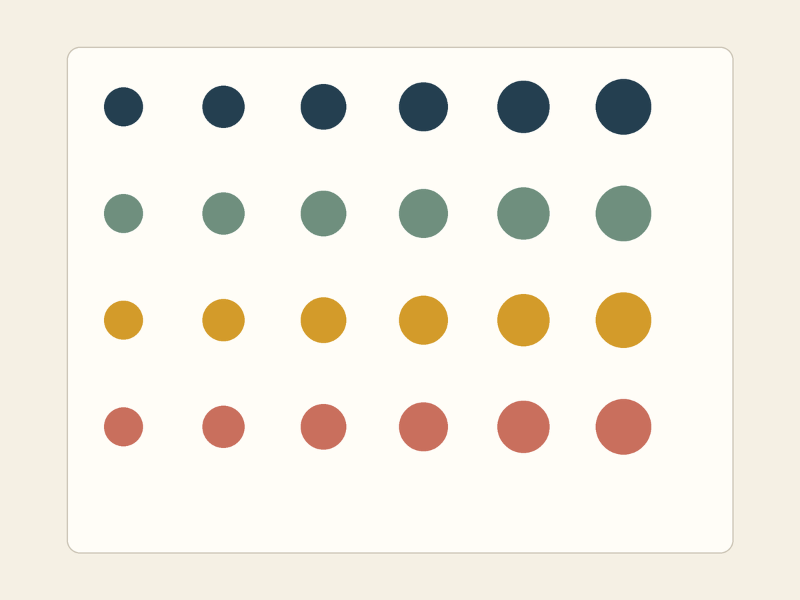

색의 순서와 크기의 변화로 반복에 방향 만들기
오늘의 실습 목표
- 색상 리스트의 RGB 튜플을 수정하고 팔레트의 순서를 이미지의 행과 연결할 수 있습니다.
- 바깥
for row와 안쪽for column이 만드는 행·열 구조를 실행 결과에서 확인할 수 있습니다. rows * columns로 전체 도형 수를 계산하고 20개 이상의 도형을 만들 수 있습니다.- 열 번호를 크기 계산에 연결해 색과 크기라는 두 속성이 변하는 시각적 리듬을 만들 수 있습니다.
- 완성 이미지를 PNG로 저장하고 새 세션에서 노트북 전체를 오류 없이 실행할 수 있습니다.
수업 시간을 채우는 대신 완료 조건을 증명한다
처음 0-6분의 공통 안내가 끝나면 각자 자신의 속도로 진행합니다. 자동 검사에서 완료 문구를 확인하고 .ipynb와 .png 두 파일을 제출한 학생은 수업 종료 시각을 기다리지 않고 바로 귀가할 수 있습니다.
속도는 평가하지 않습니다. 일찍 통과하거나 여러 번 수정한 뒤 통과하더라도 같은 완료 조건으로 판정합니다.
- 01준비노트북 사본과 파일명
- 02기준수정 전 4행 × 5열 확인
- 03팔레트RGB 색상 두 개 이상 변경
- 04리듬6열과 크기 변화 설정
- 05검증PNG 저장과 자동 검사 PASS
- 06귀가두 파일 제출 확인 후 종료
EXIT GATE
자동 검사 통과 + 두 파일 제출 확인 = 즉시 귀가
선택 확장은 의무가 아닙니다. 필수 결과물을 완성했다면 장식을 더하거나 다른 학생을 기다릴 필요가 없습니다.
귀가 조건: 제출 전에 여덟 가지 확인
- 노트북 파일명
week04_학번_이름.ipynb형식으로 변경했습니다. - 제출 정보학번, 이름 또는 별명, 리듬의 의도, PNG 파일명을 작성했습니다.
- 색상 리스트4~6개의 RGB 색을 유지하고 서로 다른 색을 최소 세 개 사용했습니다.
- 팔레트 수정시작 팔레트의 색상 리스트에서 RGB 색상을 최소 두 개 변경했습니다.
- 격자 수
columns = 6이며rows * columns가 20 이상입니다. - 두 속성 변화행에 따라 색이 바뀌고, 열에 따라 크기가 4~10픽셀씩 커집니다.
- 전체 재실행새 세션에서 모두 실행했을 때 완료 문구와 최신 PNG가 확인됩니다.
- 두 파일 제출실행 결과가 포함된
.ipynb와 최종.png를 제출했습니다.
자동 검사는 작품의 미적 취향을 채점하지 않는다
검사 셀은 RGB 범위, 팔레트 변경 수, 행과 열의 개수, 크기 변화, PNG의 최신 상태만 확인합니다. 어떤 색이 더 아름다운지 또는 어느 크기 변화가 더 좋은지는 하나의 정답으로 판정하지 않습니다.
50분 진행 기준
| 시간 | 단계 | 완료 표시 |
|---|---|---|
| 0-6분 | 공통 안내, 노트북 열기, 파일명 변경 | 자신의 사본이 열림 |
| 6-12분 | 수정 전 기준 코드를 위에서 아래로 실행 | 4행 × 5열, 원 20개 출력 |
| 12-18분 | 학번, 이름, 리듬 의도, PNG 파일명 작성 | 제출 정보 네 항목 출력 |
| 18-32분 | 색상 리스트 두 색 이상 수정, 6열 설정 | 변경 색 2개 이상, 원 24개 이상 |
| 32-40분 | 크기 변화 값을 조정해 색과 크기 두 속성 완성 | 열마다 크기 4~10픽셀 변화 |
| 40-46분 | PNG 저장, 새 세션에서 전체 재실행 | 완료 문구 표시 |
| 46-50분 | 두 파일 다운로드와 제출 상태 확인 | 제출 확인 후 귀가 |
위 시간은 마감 구간이 아니라 길을 잃지 않기 위한 기준입니다. 28분에 모든 조건을 달성했다면 28분에 검사를 통과하고 제출한 뒤 귀가할 수 있습니다. 시간이 더 필요한 학생은 최대 50분까지 자신의 속도로 진행합니다.
STEP 0: 실습 노트북 준비
아래 템플릿에는 팔레트 미리보기, 중첩 반복, PNG 저장, 자동 검사 셀이 이미 준비되어 있습니다. 빈 노트북에서 코드를 다시 작성하지 않고 EDIT로 표시된 값만 수정합니다.
- 템플릿을 직접 열었거나 업로드했다면 파일 → Drive에 사본 저장을 선택합니다.
- 상단 파일명을 눌러
week04_학번_이름.ipynb로 바꿉니다. EDIT표시가 있는 셀의 값만 수정하고DO NOT EDIT영역과 FINAL CHECK는 그대로 둡니다.
노트북이 Colab에서 바로 열리지 않을 때
먼저 Starter notebook 카드를 눌러 파일을 기기에 내려받습니다. Colab 첫 화면의 업로드 탭 또는 열린 노트북의 파일 → 노트 업로드에서 내려받은 .ipynb 파일을 선택합니다.
STEP 1: 수정하기 전에 기준 격자 실행
처음에는 값을 바꾸지 않고 STEP 0부터 STEP 3까지 순서대로 실행합니다. STEP 3에서 4행 × 5열, 원 20개, 크기 변화 0픽셀이 출력되면 출발점이 정상입니다. 모든 원의 크기가 같아도 아직은 오류가 아닙니다.

기준 실행에서 팔레트 네 칸과 4행 × 5열의 원 20개가 모두 보이면 수정 준비를 완료했습니다.
NameError가 나오거나 격자가 보이지 않을 때
오류가 난 셀만 반복하지 않습니다. STEP 0의 준비 셀부터 위에서 아래로 다시 실행합니다. palette 또는 image가 정의되지 않았다는 메시지는 앞 셀이 실행되지 않았다는 뜻입니다.
STEP 2: 제출 정보와 리듬 의도 작성
STEP 1 코드 셀에서 = 오른쪽의 따옴표 안 내용만 자신의 정보로 바꿉니다. 변수 이름, 등호, 따옴표는 삭제하지 않습니다.
student_id = "20260000"
student_name = "김민지"
rhythm_intent = "파란색에서 주황색으로 행이 바뀌고, 오른쪽으로 갈수록 원이 커진다."
output_filename = "week04_20260000_김민지.png"| 변수 | 작성 내용 | 주의할 점 |
|---|---|---|
student_id | 자신의 학번 | 숫자만 있더라도 따옴표 안에 작성 |
student_name | 이름 또는 제출 확인이 가능한 별명 | 노트북과 PNG에 같은 표기 사용 |
rhythm_intent | 색과 크기가 변하는 방향 | 15자 이상의 완전한 한 문장 |
output_filename | week04_학번_이름.png | 학번·이름의 실제 값과 정확히 일치 |
파일명 검사에서 멈출 때
student_id가 20260000이고 student_name이 김민지라면 PNG 파일명은 정확히 week04_20260000_김민지.png여야 합니다. 공백, 하이픈, 괄호를 추가하지 않습니다.
STEP 3: 색상 리스트에서 최소 두 색 수정
STEP 2에는 네 개의 RGB 튜플이 대괄호 안에 들어 있습니다. 먼저 두 줄만 선택해 숫자를 바꾸고 팔레트 미리보기를 확인합니다. 한 색을 이루는 숫자 세 개는 모두 0~255 범위의 정수여야 합니다.
# EDIT: RGB 튜플 두 개 이상을 수정합니다.
palette = [
(42, 71, 92),
(126, 155, 133),
(211, 155, 42),
(201, 111, 93),
]- 리스트에는 RGB 색상을 4개 이상 6개 이하로 둡니다.
- 서로 다른 색을 최소 세 개 사용하고, 도형 색은 배경색과 구분합니다.
- 시작 팔레트와 비교해 최소 두 색이 달라야 합니다.
- 색상 하나를 바꾼 뒤 셀을 다시 실행해 미리보기에서 차이를 확인합니다.
셀 아래에 현재 변경한 팔레트 색상: 2개 이상이 출력되고, 미리보기에서 서로 다른 색 세 개 이상을 구분할 수 있습니다.
리스트 또는 RGB 검사에서 멈출 때
전체 목록은 대괄호 [ ], 색 하나는 둥근괄호 ( )로 묶였는지 확인합니다. 각 색에는 쉼표로 구분한 정수 세 개가 필요합니다. 숫자에 따옴표를 붙이거나 255보다 큰 값을 쓰지 않습니다.
변경한 팔레트 색상이 0개 또는 1개라고 나올 때
현재 리스트를 수정 전 네 색과 같은 위치끼리 비교한 결과입니다. 기존 값과 다른 RGB 튜플이 최소 두 줄이 되도록 바꿉니다. 색의 순서를 교환해도 두 위치의 값이 달라지지만, 처음에는 두 색의 숫자를 직접 조정하는 편이 변화 원인을 이해하기 쉽습니다.
STEP 4: 6열과 크기 변화로 리듬 완성
STEP 3 셀에서는 두 숫자만 수정합니다. columns를 6으로 바꾸면 각 행에 원이 하나씩 늘어납니다. size_step을 4~10으로 바꾸면 열이 오른쪽으로 이동할 때마다 원의 지름이 그만큼 커집니다.
# EDIT: 오른쪽 숫자만 수정합니다.
columns = 6
size_step = 6
# 행 수는 팔레트의 색상 수에서 자동으로 정합니다.
rows = len(palette)팔레트가 네 색이면 rows는 4이고, 열은 6이므로 rows * columns = 4 * 6 = 24입니다. 따라서 도형 20개 이상이라는 조건을 충족합니다. 학생은 아래 중첩 반복 코드를 고치지 않고, 위의 두 매개변수가 결과를 어떻게 바꾸는지 확인합니다.
for row in range(rows):
color = palette[row]
for column in range(columns):
x = start_x + column * gap_x
y = start_y + row * gap_y
size = base_size + column * size_step
draw.ellipse((x, y, x + size, y + size), fill=color)| 코드 | 직접 정하는 것 | 화면에서 보이는 결과 |
|---|---|---|
palette[row] | 행마다 사용할 색의 순서 | 위에서 아래로 색이 바뀜 |
columns = 6 | 한 행에 놓을 원의 개수 | 왼쪽에서 오른쪽까지 여섯 원 |
column * gap_x | 열에 따른 가로 위치 | 원들이 일정한 간격으로 이동 |
row * gap_y | 행에 따른 세로 위치 | 색마다 서로 다른 행 형성 |
column * size_step | 열마다 더할 크기 | 오른쪽으로 갈수록 원이 커짐 |
격자: 4행 이상 × 6열, 그린 원: 24개 이상, 열이 바뀔 때 늘어나는 크기: 4~10픽셀이 출력되면 구조 조건을 완료했습니다.
원은 보이지만 크기가 모두 같을 때
size_step이 아직 0이면 모든 열의 크기가 같습니다. 값을 4부터 10 사이의 정수로 바꾼 뒤 STEP 3 셀을 다시 실행합니다. size_step = "6"처럼 숫자에 따옴표를 붙이지 않습니다.
중첩 반복 또는 원의 개수 검사에서 멈출 때
columns가 정확히 6인지 먼저 확인합니다. 팔레트를 실수로 세 색 이하로 줄였다면 다시 네 색 이상으로 복구합니다. for row, for column, 들여쓰기, drawn_shape_count가 있는 DO NOT EDIT 영역은 수정하지 않습니다.
STEP 5: 최종 이미지를 PNG로 저장
팔레트와 크기 변화를 마지막으로 확인한 뒤 STEP 4 저장 셀을 실행합니다. 저장 코드는 수정하지 않습니다.
image.save(output_filename)output_filename에는 STEP 1에서 작성한 week04_학번_이름.png가 저장되어 있습니다. 저장 셀은 파일을 다시 열어 보여 주므로, 바로 위의 최종 이미지와 저장된 PNG가 같은지 확인할 수 있습니다.
값을 바꾼 뒤에는 이미지를 다시 만들고 저장한다
색이나 크기를 수정한 뒤 STEP 3만 실행하면 화면은 바뀌지만 PNG에는 이전 결과가 남을 수 있습니다. 최종 수정 후에는 STEP 3 이미지 생성과 STEP 4 저장을 차례로 실행합니다.
PNG가 파일 목록에 보이지 않을 때
STEP 4 저장 셀에 빨간 오류가 없는지 확인합니다. Colab 왼쪽의 폴더 아이콘을 누른 뒤 새로고침하면 현재 세션에 저장된 파일이 보입니다. 그래도 없다면 output_filename의 따옴표와 .png 확장자를 확인하고 저장 셀을 다시 실행합니다.
STEP 6: 새 세션에서 자동 검사 PASS
- 런타임 → 세션 다시 시작을 선택합니다.
- 런타임 → 모두 실행을 한 번 선택합니다.
- 마지막 FINAL CHECK 셀까지 오류 없이 실행되는지 기다립니다.
- 아래 완료 문구가 모두 보이는지 확인합니다.
✅ 제출 정보와 리듬 의도 검사 통과
✅ 색상 리스트와 팔레트 변경 검사 통과
✅ 중첩 반복과 20개 이상 도형 검사 통과
✅ 색과 크기의 두 속성 변화 검사 통과
✅ PNG 저장과 새 런타임 전체 실행 검사 통과
🎉 WEEK 04 RHYTHM GRID COMPLETE
FINAL CHECK 코드는 이번 주 학습 범위가 아니다
검사 셀에는 아직 배우지 않은 조건 검사와 파일 비교 코드가 포함되어 있습니다. 직접 작성하거나 해석할 필요가 없습니다. 오류의 마지막 한글 문장을 읽고 안내된 EDIT 값만 수정합니다. 검사 셀을 지우거나 내용을 바꾸면 완료로 인정하지 않습니다.
PNG가 최신 상태가 아니라는 오류가 나올 때
화면에 있는 image와 저장된 PNG의 픽셀이 다르다는 뜻입니다. STEP 3 격자 생성 셀을 실행하고 바로 이어서 STEP 4 저장 셀을 실행한 뒤 FINAL CHECK를 다시 실행합니다.
새 런타임 전체 실행 오류가 나올 때
셀을 개별적으로 여러 번 실행한 상태입니다. 작품을 저장한 뒤 세션을 다시 시작하고 모두 실행을 한 번만 선택합니다. 실행 중에는 중간 셀의 재생 버튼을 따로 누르지 않습니다.
STEP 7: 두 파일 제출 후 즉시 귀가
- 마지막 셀에 WEEK 04 RHYTHM GRID COMPLETE가 보이는지 확인합니다.
- 파일 → 다운로드 → .ipynb 다운로드로 실행 결과가 포함된 노트북을 받습니다.
- Colab 왼쪽 파일 목록에서
week04_학번_이름.png를 찾아 다운로드합니다. - 제출함에
.ipynb와.png두 파일을 모두 업로드합니다. - 제출 완료 상태를 확인하면 남은 시간과 관계없이 바로 귀가합니다.
완료 판정
자동 검사 PASS가 보이고 제출함에 올바른 .ipynb와 .png가 등록되었다면 오늘의 필수 학습 목표를 달성했습니다. 작업 속도와 남은 수업 시간은 평가에 반영하지 않습니다.
선택 확장: 완료 후 더 실험하고 싶은 경우만
아래 활동은 귀가 조건이 아니며 추가 점수도 없습니다. 필수 미션을 완료한 학생은 선택 확장을 하지 않고 제출 후 귀가해도 됩니다. 확장을 시도할 때에는 먼저 통과한 파일을 보존합니다.
- 팔레트에 한두 색을 추가해 5행 또는 6행의 리듬을 비교합니다.
size_step을 4, 7, 10으로 각각 바꾸고 크기 변화의 강도를 비교합니다.- 팔레트의 순서만 바꾸어 위에서 아래로 느껴지는 무게 중심을 비교합니다.
- 다른 팔레트로 두 번째 이미지를 만들되 제출용 파일은 최종 선택한 한 장으로 유지합니다.
공식 도움말
- Google Colab 공식 입문 노트북코드 셀 실행, 노트북 저장, 런타임 사용법을 확인할 수 있는 공식 자료
- Python 공식 튜토리얼: Lists대괄호, 순서, 0부터 시작하는 인덱스에 관한 공식 설명
- Python 공식 튜토리얼: for Statements리스트와 정수 범위를 순서대로 반복하는 문장의 공식 설명
- Pillow 공식 문서: ImageDraw타원의 좌표, 채우기 색상, 윤곽선을 지정하는 공식 사용법
- Pillow 공식 문서: Image.save()완성 이미지를 파일로 저장하는 메서드의 공식 설명